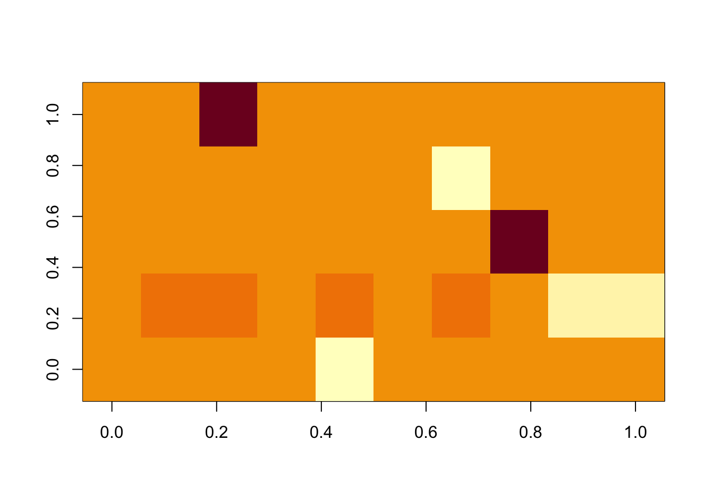
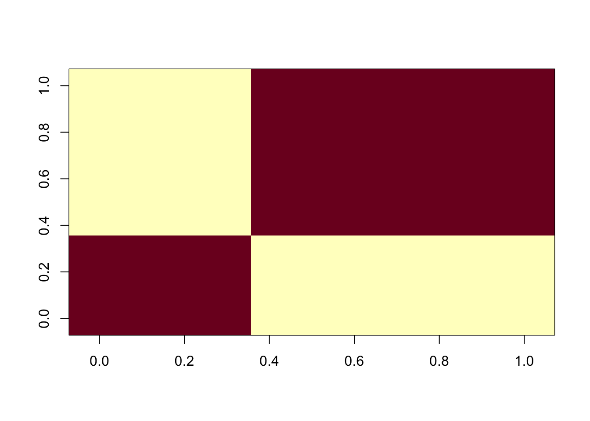

Last updated: 2021-05-24
Checks: 7 0
Knit directory: misc/analysis/
This reproducible R Markdown analysis was created with workflowr (version 1.6.2). The Checks tab describes the reproducibility checks that were applied when the results were created. The Past versions tab lists the development history.
Great! Since the R Markdown file has been committed to the Git repository, you know the exact version of the code that produced these results.
Great job! The global environment was empty. Objects defined in the global environment can affect the analysis in your R Markdown file in unknown ways. For reproduciblity it’s best to always run the code in an empty environment.
The command set.seed(1) was run prior to running the code in the R Markdown file. Setting a seed ensures that any results that rely on randomness, e.g. subsampling or permutations, are reproducible.
Great job! Recording the operating system, R version, and package versions is critical for reproducibility.
Nice! There were no cached chunks for this analysis, so you can be confident that you successfully produced the results during this run.
Great job! Using relative paths to the files within your workflowr project makes it easier to run your code on other machines.
Great! You are using Git for version control. Tracking code development and connecting the code version to the results is critical for reproducibility.
The results in this page were generated with repository version 932b5c4. See the Past versions tab to see a history of the changes made to the R Markdown and HTML files.
Note that you need to be careful to ensure that all relevant files for the analysis have been committed to Git prior to generating the results (you can use wflow_publish or wflow_git_commit). workflowr only checks the R Markdown file, but you know if there are other scripts or data files that it depends on. Below is the status of the Git repository when the results were generated:
Ignored files:
Ignored: .DS_Store
Ignored: .Rhistory
Ignored: .Rproj.user/
Ignored: analysis/.RData
Ignored: analysis/.Rhistory
Ignored: analysis/ALStruct_cache/
Ignored: data/.Rhistory
Ignored: data/pbmc/
Untracked files:
Untracked: .dropbox
Untracked: Icon
Untracked: analysis/GHstan.Rmd
Untracked: analysis/GTEX-cogaps.Rmd
Untracked: analysis/PACS.Rmd
Untracked: analysis/Rplot.png
Untracked: analysis/SPCAvRP.rmd
Untracked: analysis/admm_02.Rmd
Untracked: analysis/admm_03.Rmd
Untracked: analysis/compare-transformed-models.Rmd
Untracked: analysis/cormotif.Rmd
Untracked: analysis/cp_ash.Rmd
Untracked: analysis/eQTL.perm.rand.pdf
Untracked: analysis/eb_prepilot.Rmd
Untracked: analysis/eb_var.Rmd
Untracked: analysis/ebpmf1.Rmd
Untracked: analysis/flash_test_tree.Rmd
Untracked: analysis/flash_tree.Rmd
Untracked: analysis/ieQTL.perm.rand.pdf
Untracked: analysis/lasso_em_03.Rmd
Untracked: analysis/m6amash.Rmd
Untracked: analysis/mash_bhat_z.Rmd
Untracked: analysis/mash_ieqtl_permutations.Rmd
Untracked: analysis/mixsqp.Rmd
Untracked: analysis/mr.ash_lasso_init.Rmd
Untracked: analysis/mr.mash.test.Rmd
Untracked: analysis/mr_ash_modular.Rmd
Untracked: analysis/mr_ash_parameterization.Rmd
Untracked: analysis/mr_ash_ridge.Rmd
Untracked: analysis/mv_gaussian_message_passing.Rmd
Untracked: analysis/nejm.Rmd
Untracked: analysis/nmf_bg.Rmd
Untracked: analysis/normal_conditional_on_r2.Rmd
Untracked: analysis/normalize.Rmd
Untracked: analysis/pbmc.Rmd
Untracked: analysis/poisson_transform.Rmd
Untracked: analysis/pseudodata.Rmd
Untracked: analysis/qrnotes.txt
Untracked: analysis/ridge_iterative_02.Rmd
Untracked: analysis/ridge_iterative_splitting.Rmd
Untracked: analysis/samps/
Untracked: analysis/sc_bimodal.Rmd
Untracked: analysis/shrinkage_comparisons_changepoints.Rmd
Untracked: analysis/susie_en.Rmd
Untracked: analysis/susie_z_investigate.Rmd
Untracked: analysis/svd-timing.Rmd
Untracked: analysis/temp.RDS
Untracked: analysis/temp.Rmd
Untracked: analysis/test-figure/
Untracked: analysis/test.Rmd
Untracked: analysis/test.Rpres
Untracked: analysis/test.md
Untracked: analysis/test_qr.R
Untracked: analysis/test_sparse.Rmd
Untracked: analysis/z.txt
Untracked: code/multivariate_testfuncs.R
Untracked: code/rqb.hacked.R
Untracked: data/4matthew/
Untracked: data/4matthew2/
Untracked: data/E-MTAB-2805.processed.1/
Untracked: data/ENSG00000156738.Sim_Y2.RDS
Untracked: data/GDS5363_full.soft.gz
Untracked: data/GSE41265_allGenesTPM.txt
Untracked: data/Muscle_Skeletal.ACTN3.pm1Mb.RDS
Untracked: data/Thyroid.FMO2.pm1Mb.RDS
Untracked: data/bmass.HaemgenRBC2016.MAF01.Vs2.MergedDataSources.200kRanSubset.ChrBPMAFMarkerZScores.vs1.txt.gz
Untracked: data/bmass.HaemgenRBC2016.Vs2.NewSNPs.ZScores.hclust.vs1.txt
Untracked: data/bmass.HaemgenRBC2016.Vs2.PreviousSNPs.ZScores.hclust.vs1.txt
Untracked: data/eb_prepilot/
Untracked: data/finemap_data/fmo2.sim/b.txt
Untracked: data/finemap_data/fmo2.sim/dap_out.txt
Untracked: data/finemap_data/fmo2.sim/dap_out2.txt
Untracked: data/finemap_data/fmo2.sim/dap_out2_snp.txt
Untracked: data/finemap_data/fmo2.sim/dap_out_snp.txt
Untracked: data/finemap_data/fmo2.sim/data
Untracked: data/finemap_data/fmo2.sim/fmo2.sim.config
Untracked: data/finemap_data/fmo2.sim/fmo2.sim.k
Untracked: data/finemap_data/fmo2.sim/fmo2.sim.k4.config
Untracked: data/finemap_data/fmo2.sim/fmo2.sim.k4.snp
Untracked: data/finemap_data/fmo2.sim/fmo2.sim.ld
Untracked: data/finemap_data/fmo2.sim/fmo2.sim.snp
Untracked: data/finemap_data/fmo2.sim/fmo2.sim.z
Untracked: data/finemap_data/fmo2.sim/pos.txt
Untracked: data/logm.csv
Untracked: data/m.cd.RDS
Untracked: data/m.cdu.old.RDS
Untracked: data/m.new.cd.RDS
Untracked: data/m.old.cd.RDS
Untracked: data/mainbib.bib.old
Untracked: data/mat.csv
Untracked: data/mat.txt
Untracked: data/mat_new.csv
Untracked: data/matrix_lik.rds
Untracked: data/paintor_data/
Untracked: data/running_data_chris.csv
Untracked: data/running_data_matthew.csv
Untracked: data/temp.txt
Untracked: data/y.txt
Untracked: data/y_f.txt
Untracked: data/zscore_jointLCLs_m6AQTLs_susie_eQTLpruned.rds
Untracked: data/zscore_jointLCLs_random.rds
Untracked: explore_udi.R
Untracked: output/fit.k10.rds
Untracked: output/fit.varbvs.RDS
Untracked: output/glmnet.fit.RDS
Untracked: output/test.bv.txt
Untracked: output/test.gamma.txt
Untracked: output/test.hyp.txt
Untracked: output/test.log.txt
Untracked: output/test.param.txt
Untracked: output/test2.bv.txt
Untracked: output/test2.gamma.txt
Untracked: output/test2.hyp.txt
Untracked: output/test2.log.txt
Untracked: output/test2.param.txt
Untracked: output/test3.bv.txt
Untracked: output/test3.gamma.txt
Untracked: output/test3.hyp.txt
Untracked: output/test3.log.txt
Untracked: output/test3.param.txt
Untracked: output/test4.bv.txt
Untracked: output/test4.gamma.txt
Untracked: output/test4.hyp.txt
Untracked: output/test4.log.txt
Untracked: output/test4.param.txt
Untracked: output/test5.bv.txt
Untracked: output/test5.gamma.txt
Untracked: output/test5.hyp.txt
Untracked: output/test5.log.txt
Untracked: output/test5.param.txt
Note that any generated files, e.g. HTML, png, CSS, etc., are not included in this status report because it is ok for generated content to have uncommitted changes.
These are the previous versions of the repository in which changes were made to the R Markdown (analysis/susie_flash.Rmd) and HTML (docs/susie_flash.html) files. If you’ve configured a remote Git repository (see ?wflow_git_remote), click on the hyperlinks in the table below to view the files as they were in that past version.
| File | Version | Author | Date | Message |
|---|---|---|---|---|
| Rmd | 932b5c4 | Matthew Stephens | 2021-05-24 | workflowr::wflow_publish(“susie_flash.Rmd”) |
My idea here is to look at using flash, with susie to solve the ebnm problem. Susie is very sparse, so the idea is that this might provide a good solution for very sparse factors. This is potentially helpful because in some applications we have problems where the prior and factors start off dense (from PCA initialization say), and then it can’t move away from that solution.
library(susieR)
library(flashier)I coded up an ebnm function based on susie (which assumes only a small number of values are non-zero).
ebnm_susie = function(x,s, g_init,fix_g, output){
z = x/s
fit.susie = susieR::susie_rss(z, R = diag(length(z)))
posterior <- list(mean = drop(s*susie_get_posterior_mean(fit.susie)), sd = drop(s*susie_get_posterior_sd(fit.susie)))
posterior$second_moment = posterior$mean^2 + posterior$sd^2
return(list(posterior=posterior, log_likelihood = susie_get_objective(fit.susie), fitted_g = "susie"))
}Now I run it on data with 10 independent variables. So the covariance will be close to the identity. My idea is that it should pick up the 10 variables as sparse “factors”. (This is a bit weird compared with regular factor analysis, but I think it should work that way in principle.) However, it stopped after fitting one factor for reasons I don’t understand yet.
n = 100
p = 10
x = matrix(rnorm(n*p),nrow=n,ncol=p)
S = cov(x)
S.f = flashier::flash(S, prior.family = as.prior(ebnm_susie), backfit=FALSE, var.type=2)Adding factor 1 to flash object...
Factor doesn't significantly increase objective and won't be added.
Wrapping up...
Done.
No factors have been added. Skipping nullcheck.S.f$loadings.pmNULLHere I tried flashr instead (which requires a different output format for the ebnm function, unfortunately). It seems to kind of work.
ebnm_susie2 = function(x,s, ebnm_param, output=NULL){
z = x/s
fit.susie = susieR::susie_rss(drop(z), R = diag(length(drop(z))))
posterior <- list(mean = s*susie_get_posterior_mean(fit.susie), sd = s*susie_get_posterior_sd(fit.susie))
posterior$second_moment = posterior$mean^2 + posterior$sd^2
return(list(postmean = drop(posterior$mean), postmean2 = drop(posterior$second_moment), penloglik = drop(susie_get_objective(fit.susie)), fitted.g = NULL))
}
fit.flash = flashr::flash(S,ebnm_fn = "ebnm_susie2")Registered S3 method overwritten by 'flashr':
method from
print.flash flashierFitting factor/loading 1 (stop when difference in obj. is < 1.00e-02): Iteration Objective Obj Diff 1 -20.21 Inf 2 2.58 2.28e+01 3 52.96 5.04e+01 4 78.86 2.59e+01 5 85.88 7.01e+00 6 87.41 1.53e+00 7 87.72 3.17e-01 8 87.79 6.49e-02 9 87.80 1.33e-02 10 87.80 2.71e-03Performing nullcheck... Deleting factor 1 decreases objective by 1.25e+02. Factor retained. Nullcheck complete. Objective: 87.8Fitting factor/loading 2 (stop when difference in obj. is < 1.00e-02): Iteration Objective Obj Diff 1 100.21 InfWarning in verbose_obj_decrease_warning(): An iteration decreased the objective.
This happens occasionally, perhaps due to numeric reasons. You could ignore this
warning, but you might like to check out https://github.com/stephenslab/flashr/
issues/26 for more details. 2 94.50 -5.71e+00Performing nullcheck... Deleting factor 2 decreases objective by 6.70e+00. Factor retained. Nullcheck complete. Objective: 94.5Fitting factor/loading 3 (stop when difference in obj. is < 1.00e-02): Iteration Objective Obj Diff 1 113.12 Inf 2 143.49 3.04e+01 3 177.32 3.38e+01 4 189.46 1.21e+01 5 192.35 2.89e+00 6 192.96 6.11e-01 7 193.09 1.26e-01 8 193.11 2.60e-02 9 193.12 5.33e-03Performing nullcheck... Deleting factor 3 decreases objective by 9.86e+01. Factor retained. Nullcheck complete. Objective: 193.12Fitting factor/loading 4 (stop when difference in obj. is < 1.00e-02): Iteration Objective Obj Diff 1 198.32 Inf 2 207.11 8.80e+00 3 259.92 5.28e+01 4 312.80 5.29e+01 5 333.34 2.05e+01 6 338.31 4.97e+00 7 339.36 1.05e+00 8 339.58 2.16e-01 9 339.62 4.41e-02 10 339.63 8.98e-03Performing nullcheck... Deleting factor 4 decreases objective by 1.47e+02. Factor retained. Nullcheck complete. Objective: 339.63Fitting factor/loading 5 (stop when difference in obj. is < 1.00e-02): Iteration Objective Obj Diff 1 350.26 Inf 2 368.33 1.81e+01 3 403.92 3.56e+01 4 420.11 1.62e+01 5 424.31 4.19e+00 6 425.22 9.10e-01 7 425.40 1.89e-01 8 425.44 3.90e-02 9 425.45 8.04e-03Performing nullcheck... Deleting factor 5 decreases objective by 8.58e+01. Factor retained. Nullcheck complete. Objective: 425.45Fitting factor/loading 6 (stop when difference in obj. is < 1.00e-02): Iteration Objective Obj Diff 1 425.47 InfWarning in verbose_obj_decrease_warning(): An iteration decreased the objective.
This happens occasionally, perhaps due to numeric reasons. You could ignore this
warning, but you might like to check out https://github.com/stephenslab/flashr/
issues/26 for more details. 2 422.39 -3.08e+00Performing nullcheck... Deleting factor 6 increases objective by 3.06e+00. Factor zeroed out. Nullcheck complete. Objective: 425.45image(fit.flash$ldf$l)
image(fit.flash$ldf$f)
Now I simulate data with a strong block structure. It finds the blocks, but it fits each block using multiple factors, presumably because it is “over-shrinking” each factor so it needs to add more factors to compensate.
x1 = rnorm(n)
x2 = rnorm(n)
x = cbind(x1,x1,x1,x2,x2,x2,x2,x2)
S = cov(x)
image(S)
fit.flash = flashr::flash(S,ebnm_fn = "ebnm_susie2")Fitting factor/loading 1 (stop when difference in obj. is < 1.00e-02): Iteration Objective Obj Diff 1 5057.35 InfWarning in verbose_obj_decrease_warning(): An iteration decreased the objective.
This happens occasionally, perhaps due to numeric reasons. You could ignore this
warning, but you might like to check out https://github.com/stephenslab/flashr/
issues/26 for more details. 2 -34.70 -5.09e+03Performing nullcheck... Deleting factor 1 decreases objective by 2.85e+01. Factor retained. Nullcheck complete. Objective: -34.7Fitting factor/loading 2 (stop when difference in obj. is < 1.00e-02): Iteration Objective Obj Diff 1 44.52 InfWarning in verbose_obj_decrease_warning(): An iteration decreased the objective.
This happens occasionally, perhaps due to numeric reasons. You could ignore this
warning, but you might like to check out https://github.com/stephenslab/flashr/
issues/26 for more details. 2 -19.10 -6.36e+01Performing nullcheck... Deleting factor 2 decreases objective by 1.42e+01. Factor retained. Nullcheck complete. Objective: -19.1Fitting factor/loading 3 (stop when difference in obj. is < 1.00e-02): Iteration Objective Obj Diff 1 26.18 InfWarning in verbose_obj_decrease_warning(): An iteration decreased the objective.
This happens occasionally, perhaps due to numeric reasons. You could ignore this
warning, but you might like to check out https://github.com/stephenslab/flashr/
issues/26 for more details. 2 -7.29 -3.35e+01Performing nullcheck... Deleting factor 3 decreases objective by 1.11e+01. Factor retained. Nullcheck complete. Objective: -7.29Fitting factor/loading 4 (stop when difference in obj. is < 1.00e-02): Iteration Objective Obj Diff 1 30.27 InfWarning in verbose_obj_decrease_warning(): An iteration decreased the objective.
This happens occasionally, perhaps due to numeric reasons. You could ignore this
warning, but you might like to check out https://github.com/stephenslab/flashr/
issues/26 for more details. 2 3.74 -2.65e+01Performing nullcheck... Deleting factor 4 decreases objective by 1.05e+01. Factor retained. Nullcheck complete. Objective: 3.74Fitting factor/loading 5 (stop when difference in obj. is < 1.00e-02): Iteration Objective Obj Diff 1 39.11 InfWarning in verbose_obj_decrease_warning(): An iteration decreased the objective.
This happens occasionally, perhaps due to numeric reasons. You could ignore this
warning, but you might like to check out https://github.com/stephenslab/flashr/
issues/26 for more details. 2 14.58 -2.45e+01Performing nullcheck... Deleting factor 5 decreases objective by 1.04e+01. Factor retained. Nullcheck complete. Objective: 14.58Fitting factor/loading 6 (stop when difference in obj. is < 1.00e-02): Iteration Objective Obj Diff 1 49.27 InfWarning in verbose_obj_decrease_warning(): An iteration decreased the objective.
This happens occasionally, perhaps due to numeric reasons. You could ignore this
warning, but you might like to check out https://github.com/stephenslab/flashr/
issues/26 for more details. 2 25.37 -2.39e+01Performing nullcheck... Deleting factor 6 decreases objective by 1.03e+01. Factor retained. Nullcheck complete. Objective: 25.37Fitting factor/loading 7 (stop when difference in obj. is < 1.00e-02): Iteration Objective Obj Diff 1 60.12 InfWarning in verbose_obj_decrease_warning(): An iteration decreased the objective.
This happens occasionally, perhaps due to numeric reasons. You could ignore this
warning, but you might like to check out https://github.com/stephenslab/flashr/
issues/26 for more details. 2 36.15 -2.40e+01Performing nullcheck... Deleting factor 7 decreases objective by 1.03e+01. Factor retained. Nullcheck complete. Objective: 36.15Fitting factor/loading 8 (stop when difference in obj. is < 1.00e-02): Iteration Objective Obj Diff 1 70.68 InfWarning in verbose_obj_decrease_warning(): An iteration decreased the objective.
This happens occasionally, perhaps due to numeric reasons. You could ignore this
warning, but you might like to check out https://github.com/stephenslab/flashr/
issues/26 for more details. 2 46.92 -2.38e+01Performing nullcheck... Deleting factor 8 decreases objective by 1.03e+01. Factor retained. Nullcheck complete. Objective: 46.92Fitting factor/loading 9 (stop when difference in obj. is < 1.00e-02): Iteration Objective Obj Diff 1 81.15 InfWarning in verbose_obj_decrease_warning(): An iteration decreased the objective.
This happens occasionally, perhaps due to numeric reasons. You could ignore this
warning, but you might like to check out https://github.com/stephenslab/flashr/
issues/26 for more details. 2 57.69 -2.35e+01Performing nullcheck... Deleting factor 9 decreases objective by 1.03e+01. Factor retained. Nullcheck complete. Objective: 57.69fit.flash$ldf$f [,1] [,2] [,3] [,4] [,5] [,6]
x1 -0.02092145 -0.03680205 0.04953684 -0.05651366 0.05925938 -0.06033519
x1 -0.02092145 -0.03680205 0.04953684 -0.05651366 0.05925938 -0.06033519
x1 -0.02092145 -0.03680205 0.04953684 -0.05651366 0.05925938 -0.06033519
x2 0.44691988 0.44630412 -0.44556443 0.44506598 -0.44485166 0.44476488
x2 0.44691988 0.44630412 -0.44556443 0.44506598 -0.44485166 0.44476488
x2 0.44691988 0.44630412 -0.44556443 0.44506598 -0.44485166 0.44476488
x2 0.44691988 0.44630412 -0.44556443 0.44506598 -0.44485166 0.44476488
x2 0.44691988 0.44630412 -0.44556443 0.44506598 -0.44485166 0.44476488
[,7] [,8]
x1 -0.06008223 0.06046917
x1 -0.06008223 0.06046917
x1 -0.06008223 0.06046917
x2 0.44478543 -0.44475396
x2 0.44478543 -0.44475396
x2 0.44478543 -0.44475396
x2 0.44478543 -0.44475396
x2 0.44478543 -0.44475396Try looking at rank 1 solution.. indeed it is underfitting… Maybe because the residual variance is too big because the signal has not yet been removed? Maybe adding a diagonal element could help with this? (ie Y = LDF’ + E where D is a diagonal matrix estimated as a free parameter?)
fit.flash = flashr::flash(S,ebnm_fn = "ebnm_susie2", Kmax=1)Fitting factor/loading 1 (stop when difference in obj. is < 1.00e-02): Iteration Objective Obj Diff 1 5057.35 InfWarning in verbose_obj_decrease_warning(): An iteration decreased the objective.
This happens occasionally, perhaps due to numeric reasons. You could ignore this
warning, but you might like to check out https://github.com/stephenslab/flashr/
issues/26 for more details. 2 -34.70 -5.09e+03Performing nullcheck... Deleting factor 1 decreases objective by 2.85e+01. Factor retained. Nullcheck complete. Objective: -34.7flashr::flash_get_fitted_values(fit.flash) x1 x1 x1 x2 x2
x1 0.0002530817 0.0002530817 0.0002530817 -0.005406282 -0.005406282
x1 0.0002530817 0.0002530817 0.0002530817 -0.005406282 -0.005406282
x1 0.0002530817 0.0002530817 0.0002530817 -0.005406282 -0.005406282
x2 -0.0083967013 -0.0083967013 -0.0083967013 0.179368656 0.179368656
x2 -0.0083967013 -0.0083967013 -0.0083967013 0.179368656 0.179368656
x2 -0.0083967013 -0.0083967013 -0.0083967013 0.179368656 0.179368656
x2 -0.0083967013 -0.0083967013 -0.0083967013 0.179368656 0.179368656
x2 -0.0083967013 -0.0083967013 -0.0083967013 0.179368656 0.179368656
x2 x2 x2
x1 -0.005406282 -0.005406282 -0.005406282
x1 -0.005406282 -0.005406282 -0.005406282
x1 -0.005406282 -0.005406282 -0.005406282
x2 0.179368656 0.179368656 0.179368656
x2 0.179368656 0.179368656 0.179368656
x2 0.179368656 0.179368656 0.179368656
x2 0.179368656 0.179368656 0.179368656
x2 0.179368656 0.179368656 0.179368656fit.flash$ldf$l [,1]
x1 -0.01347562
x1 -0.01347562
x1 -0.01347562
x2 0.44709176
x2 0.44709176
x2 0.44709176
x2 0.44709176
x2 0.44709176
sessionInfo()R version 3.6.0 (2019-04-26)
Platform: x86_64-apple-darwin15.6.0 (64-bit)
Running under: macOS 10.16
Matrix products: default
BLAS: /Library/Frameworks/R.framework/Versions/3.6/Resources/lib/libRblas.0.dylib
LAPACK: /Library/Frameworks/R.framework/Versions/3.6/Resources/lib/libRlapack.dylib
locale:
[1] en_US.UTF-8/en_US.UTF-8/en_US.UTF-8/C/en_US.UTF-8/en_US.UTF-8
attached base packages:
[1] stats graphics grDevices utils datasets methods base
other attached packages:
[1] flashier_0.2.7 susieR_0.11.26
loaded via a namespace (and not attached):
[1] softImpute_1.4 tidyselect_1.1.0 xfun_0.16 reshape2_1.4.4
[5] purrr_0.3.4 ashr_2.2-51 splines_3.6.0 lattice_0.20-41
[9] colorspace_1.4-1 vctrs_0.3.8 generics_0.0.2 htmltools_0.5.0
[13] yaml_2.2.1 rlang_0.4.10 mixsqp_0.3-43 later_1.1.0.1
[17] pillar_1.4.6 glue_1.4.2 trust_0.1-8 lifecycle_1.0.0
[21] plyr_1.8.6 stringr_1.4.0 munsell_0.5.0 gtable_0.3.0
[25] workflowr_1.6.2 evaluate_0.14 knitr_1.29 httpuv_1.5.4
[29] invgamma_1.1 irlba_2.3.3 parallel_3.6.0 Rcpp_1.0.6
[33] promises_1.1.1 scales_1.1.1 backports_1.1.10 horseshoe_0.2.0
[37] truncnorm_1.0-8 fs_1.5.0 deconvolveR_1.2-1 flashr_0.6-7
[41] ggplot2_3.3.2 digest_0.6.27 stringi_1.4.6 dplyr_1.0.2
[45] ebnm_0.1-36 grid_3.6.0 rprojroot_1.3-2 tools_3.6.0
[49] magrittr_2.0.1 tibble_3.0.4 crayon_1.3.4 whisker_0.4
[53] pkgconfig_2.0.3 ellipsis_0.3.1 Matrix_1.2-18 SQUAREM_2021.1
[57] rmarkdown_2.3 reshape_0.8.8 rstudioapi_0.13 R6_2.4.1
[61] git2r_0.27.1 compiler_3.6.0